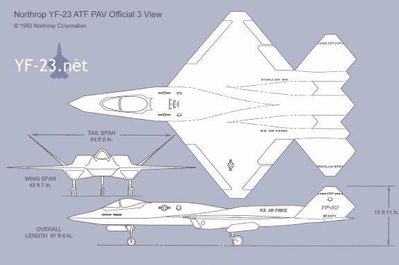

Design
It would cover the reasoning behind its shape, and concepts that were implemented to either test an idea or achieve a certain goal.

| yf-118g | Named after a Klingon spacecraftform star trek, the jet incorporated dramatic desgin inside and out, albeit in very different manners. the goal of this aircraft is to reduce the radar cross section. In addition to that the engines are buried within the fuselage to minimine infarared (heat) signature, add the fact that the aircraft also comes paint shading to hide the fuselage shapes in broad daylight. A measure not used for perveous aircraft such as the F-117 (nighthawk) and the B-2 (spirit bomber). |
| yf-23 | The YF-23A was an unconventional design, having diamond-shaped wings to reduce drag when going at subsonic and supersonic speeds. In addition to that, it would have a all-moving V-tail, compensating for the lack of elavator would be the flyby wire system to account and adjust for instability. |